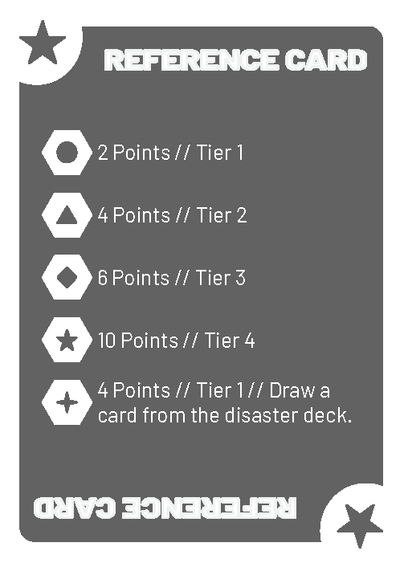

Featured Case Study
Meteor Mayhem
An original multiplayer strategy card game about mining resources, upgrading ships, taking risks, and dealing with whatever the hazard deck decides to do next.

The Question
Can luck matter without deciding who wins?
I wanted the game to be unpredictable without making players feel like their choices did not matter. Players had to decide when to take a risk, upgrade, defend, or interfere with someone else. That sounded straightforward until people actually started playing it.
Context
The first project where everything came together.
I developed Meteor Mayhem through the Life Design Lab, an Honors-level program at Morristown High School that uses the Design Thinking Process developed by Stanford University’s Hasso Plattner Institute of Design (d.school). The project brought together strategy, visual design, rules, playtesting, and the part I liked most: changing one thing and seeing what happened next.
Design Process
Question → prototype → observe → identify → revise → repeat.
Defined the kind of decisions and uncertainty I wanted the game to create.
Built a rough physical version that could finally be tested.
Watched how players interpreted the rules and which choices they made.
Wrote down confusing rules, pacing problems, and strategies worth testing again.
Changed the prototype in response to those observations.
Played again to see whether the change improved the experience.
From Prototype to Playable
The game had to make sense without me in the room.
Writing the rules down exposed missing steps and unclear wording. The current prototype rulebook is a working draft that I would test with players who have not heard me explain the game.

Playtesting Evidence
The game changed when other people touched it.
These photos show one of the physical setups I used while testing the game. The pieces were not fancy, but they made it possible to watch where players hesitated, what they ignored, and which strategies they found before I did.
Feedback: I tested the game with friends, classmates, family, and members of the local gaming community. Their questions and unexpected strategies shaped the rule, pacing, and balance changes shown below.
Expandable Case Study Playtesting Journal — What Players Taught Me
Why I Started Playtesting
I already knew how the game was supposed to work.
That was the problem. Everyone else was seeing it for the first time, which meant they were going to notice things I could not see anymore. Looking back, watching people play taught me more than repeatedly playing the game against myself.
Players Interpreted Rules Differently
I expected the written rules to be enough. Watching other people play showed me where the sequence and wording needed clearer examples.
Turns Slowed Down
Some choices took longer than I expected. That made pacing a specific problem to observe instead of something I could judge by playing alone.
Rushing the Mining Tier
Upgrading the mining tier started to look like the preferred strategy. I did not treat that as proof the game was solved, but it became a question for the next playtest.
Some Good Ideas Failed in Play
A mechanic could sound useful in my notes and still create confusion or weak decisions at the table. Removing or revising those ideas was part of finishing the game.
Looking Back
The game in my head was not always the game people experienced.
When I started, I thought game design was mostly about inventing mechanics. Now I think it is just as much about watching what people actually do with them. The first version does not have to be perfect. It has to be useful enough to show you what question to ask next.
Questions I’m Still Thinking About
- How much randomness feels exciting before it starts feeling unfair?
- How many strategies should be equally competitive?
- When does complexity make a game deeper, and when does it only make it harder to learn?
- How much information should players have before making an important decision?
- What makes someone want to play “just one more game”?
Production Artifacts
The finished prototype is only part of the evidence.
Each artifact records a different stage of the design: the original question, ideas that changed, what happened when people played, and the instructions needed for someone else to learn the game. Together, they show how Meteor Mayhem moved from a concept to a testable, explainable system.
Rulebook (Prototype Edition)
The current working draft covers setup, turns, actions, cards, disasters, and scoring. I would next test it with a group that has not heard me explain the game.
View the Rulebook (Prototype Edition) →Playtesting and Balance Questions
The questions I used during playtesting to examine mining progression, dominant strategies, and how much control players retained over uncertainty.
View the Playtesting and Balance Questions →Playtesting Journal
Observations from watching players interpret the rules, find strong strategies, and make choices I did not expect.
Open the Playtesting Journal →Planning & Brainstorming
Conference planners, proposal notes, mechanic lists, next-step ideas, and a self-evaluation document the project before the final cards existed.
View the Process Evidence →Card Prototypes
Four printable card sheets show the event, tool, gear, and disaster systems as a consistent visual and mechanical language.
View the Card System →Version history: Prototype Edition — current rulebook for the playable prototype. Future revisions will be documented here as additional testing leads to meaningful changes.
Balancing Strategy and Chaos
I balanced with questions, observation, and repeated play.
“I never actually calculated exact probabilities. Instead, I wrote down the questions I wanted to answer while playtesting. That helped me decide what to change after each game.”
The notes show what I was testing for: whether high-impact cards appeared often enough to keep the game chaotic, how long mining progression took, whether more than one path could win, whether one strategy became dominant, and how much control players had over uncertainty. The answers did not come from a finished formula. They came from watching games, making a change, and testing again.
Intentional Chaos
High-impact cards appear frequently because the game is more fun when the state can change quickly.
Progression
Stronger mining tiers take time to build, and opponents have ways to slow that progress.
Strategic Variety
Players can pursue different approaches, but rushing the mining tier emerged as a preferred strategy.
Player Agency
Card selection and scouting give players ways to respond to uncertainty instead of only accepting it.
Design Evolution
From notes to a game people could test.
Question
Could I make resource collection feel strategic instead of automatic?
Rough Ideas
Cards, hazards, ship upgrades, scoring rules, and too many possible directions.
Prototype
A physical version that was not pretty, but could finally answer questions.
Playtesting
Real players found confusing rules, slow turns, and strategies I missed.
Current Version
A more readable, balanced game—and a much better list of questions.
Process Evidence
Most of the useful work looked messy.
Card System
Cards that players could understand without stopping the game.


Video Walkthrough
The walkthrough opens with the finished prototype, then explains the main systems and how a round works.
If I Had Another Year
I would keep testing, not just add more cards.
- Test with more players who have never met me and have not heard me explain the rules.
- Explore asymmetric ships or player powers without making one clearly better.
- Build a small digital tool to organize playtest observations and compare how rule changes affect player choices.
Reflection
Players always find the part you did not think about.
The biggest lesson was that players use the rules that are actually there, not the version that only exists in the designer’s head. Writing down questions, watching people play, changing one part, and trying again became the most useful part of the process. I am still curious how far I could take the game with more testing and more people trying to break it.